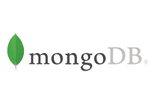
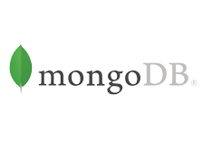

About Me
I am a driven Full Stack Web Developer with a Certificate in Web Development from the University of California, Riverside, who is passionate about creating and developing meaningful applications. I found my passion for web development while working for a non-profit organization, after seeing how fulfilling and gratifying it is to work towards a good cause and seeing the meaningful impact a few lines of code can have. During my time on staff as a Web Developer, I successfully opened an online marketplace and built out an application to mainstream internal processes. I am excited to leverage my unique talents and abilities such as team building, problem solving, and being a quick learner, to tackle challenges and work together with like-minded individuals. My strong technical skills in JavaScript, Node.js, React, and PHP, combined with my professional skills make me a great addition to any team.
About Me


 

Projects
My projects are below and show case my work. Building Full Stack applications using the MERN stack is my go to but I can take on many different languages and stacks.
The Weather App
Need to get the weather? Use The Weather App to get up to date weather.

Work Day Scheduler
Come into work each day and set up your tasks for the day. Keeps track of what time it is and displays that with a blue block.

Password Generator
Password saftey and security is very important. I created this small widget to create a secure password with ease.

 (951) 497-3472
(951) 497-3472 justinbrubaker7@gmail.com
justinbrubaker7@gmail.com LinkedIn Profile
LinkedIn Profile